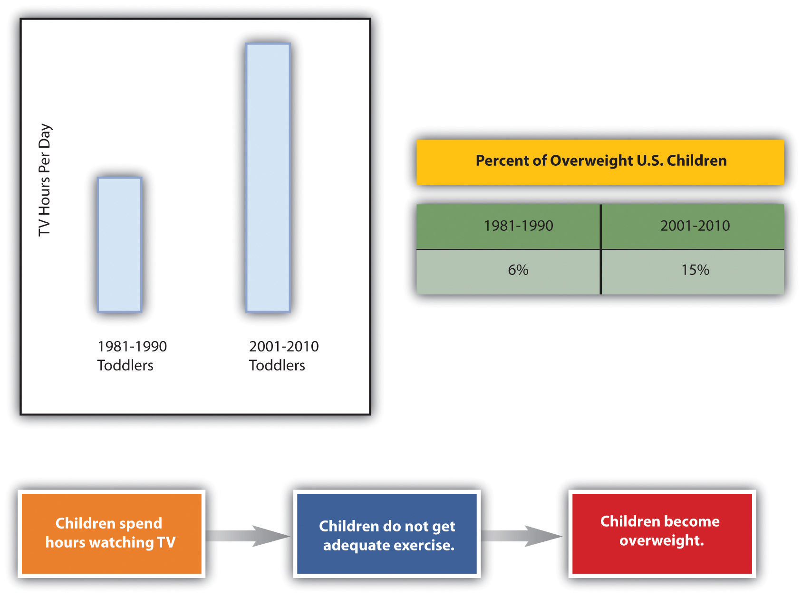

It may be a cliché to say “a picture is worth a thousand words,” but the truth is that visual images have power. Types of visuals include the following:
Incorporating lists, tables, and images is another way to break up daunting blocks of text with a combination of text-breaking images and white space. You can add white space by presenting your lists vertically rather than running them horizontally across the page as part of a sentence. Also, you can leave enough white space around images to frame the images and separate them from the text.
Besides white space, there are other considerations to keep in mind when choosing visuals. When possible, use a variety of types of visuals, but remember that any visuals you use should enhance the content of the text. For example, only add photos if viewing the photos will clarify the text. Near each visual, explain its purpose. Do not expect your readers to figure out the values of the visuals on their own. However, when you explain the purpose, do not explain it so thoroughly that readers have no reason to look at the visuals. For example, you should either list out the types of visuals or use a diagram such as the one shown and say “Use a variety of visuals, such as those shown in the box at right.” Do not both list out the options in your text and show them visually in a textbox.
You have three basic choices for finding visuals to use in your work. You can search the Internet, use photos you have taken, or create images by hand or on the computer.
The Internet is a powerful tool that you can use in several ways to find visuals to complement your work. If you simply click on “images” for your topic in a search engine, you will generate both royalty-free and protected images. However, if you include a term such as “stock imagesImage for sale from an image-source company.,” “stock photosPhoto for sale from a photo-source company.,” or “royalty-free imagesImage that is available for free use.” along with your topic, you will be able to narrow your search to royalty-free items. For example, if you are writing on the topic of the effect of television on children, you might search for “television children stock images.” Such a search will generate many options that could support a claim about the mesmerizing effect of television on children or the lack of physical activity involved in watching television.
Many services provide photos for use in publications. In these situations, you have to pay for the use of the photos and cite your source. Any pictures you take yourself are clearly royalty-free for your use. Taking a clear, meaningful picture that would be appropriate for use in your work is possible. For example, if you have children of your own or have friends or relatives who have small children, you could easily find an opportunity to take a photo such as Figure 9.4. To avoid rights issues, ask any human subjects included to sign a waiver giving you permission to use their likenesses. In the case of minors, you would obviously need to ask their guardians to sign the permission form.
Here’s an example of a typical waiver:
I give Joe Student permission to use my likeness [or the likeness of _______ for whom I have guardian or parental responsibility] in his paper entitled “Paper Title.” I understand that this paper could possibly appear in print or digital form as part of educational knowledge or research.
Signature___________________________ Date___________________________
Similarly, pictures taken by friends or relatives could be available for your use as long as you get signed permission to use the photo as well as signed permission from any human subjects in the photo. Although it might seem silly to ask your sister, for example, to give you signed permission to use her photo or image, you never know what complications you could encounter later on. So always protect yourself with permissions.
A third option is to create your visuals. You do not have to be an artist to successfully choose this option. You can use computer programs to generate very professional looking charts, graphs, tables, flow charts, and schematic images. The following examples show just a fraction of your options when using standard word processing software programs.
Figure 9.5
When you create graphics, make sure to group the components. If you find that your graphics are not holding together when viewed on other computers or in other programs, save each graphic in a separate JPEG file and use the JPEGs in your paper.
Since you will most likely submit your work in a digital format, you will probably not have to be concerned with the quality of photos you choose to use. On the other hand, if you do have to submit a paper in hard copy and are incorporating photos, make sure to use a printer with photo-quality capabilities.
Subject your visuals to the same level of scrutiny as your writing. Keep in mind that if you find one person who has a problem with one of your visuals, there will be others who also take exception. On the other hand, remember that you can never please everyone, so you will have to use your judgment.
Consider all your options as you choose whether to find existing visuals, take photos, or create visuals or a combination of the three possibilities. There is no right choice as long as the images you choose add value to your work.